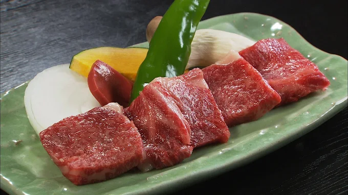
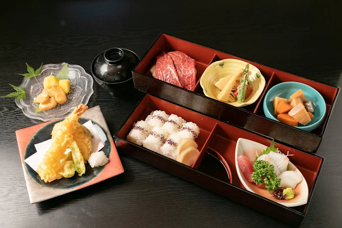
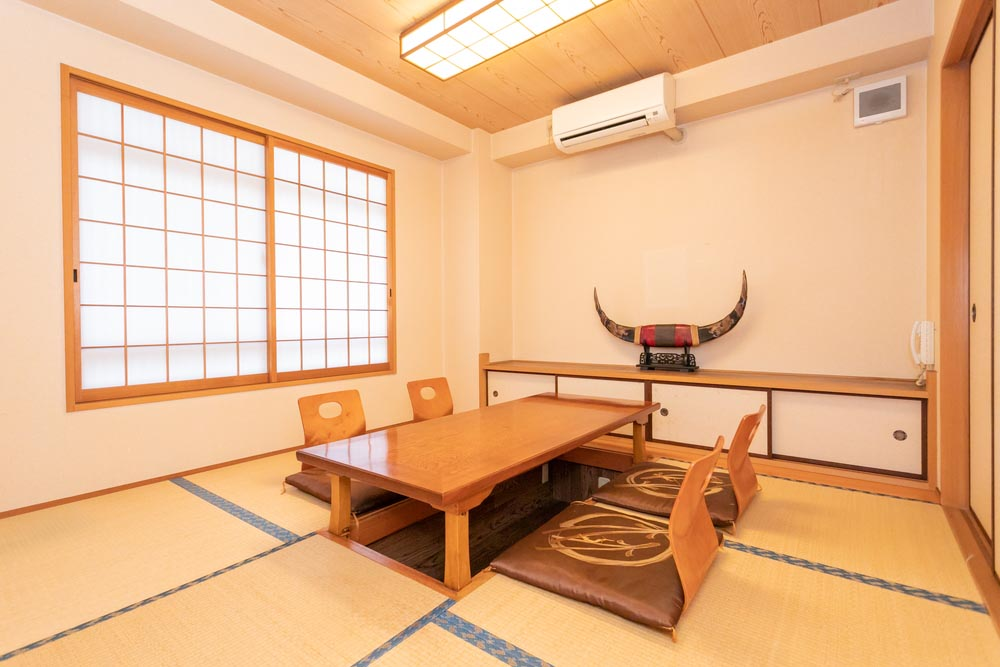
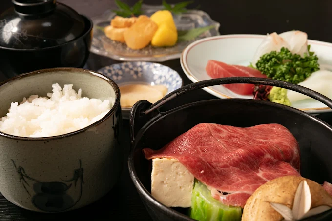
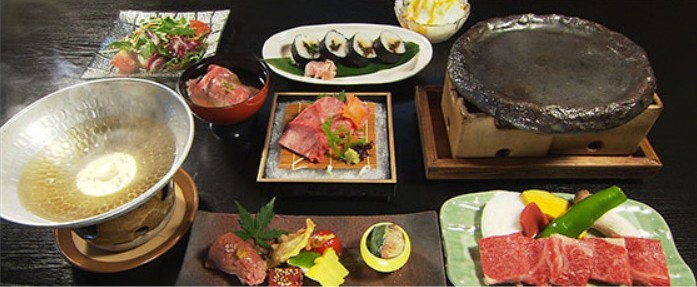
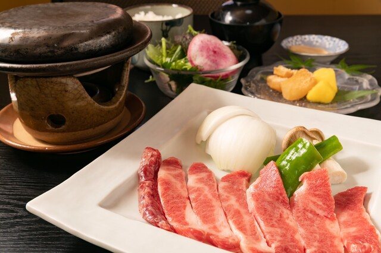
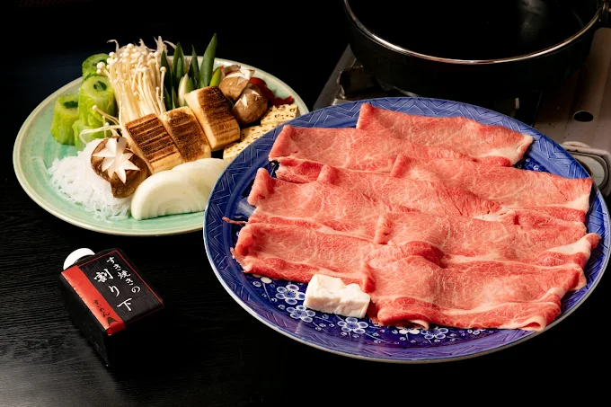
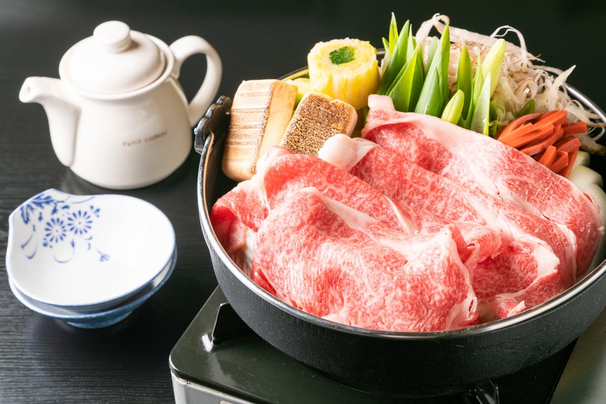

近江八幡駅北口から徒歩5分。
落ち着いた座敷空間で、
希少な中川牧場直送の特選近江牛をご堪能いただけます。
日本三大和牛のひとつ・近江牛の始祖ともいわれる「中川牛」は、
やわらかな肉質と上品な旨味、軽やかな脂が特長です。
素材本来の美味しさを活かした、和の一皿としてご提供いたします。
ランチからご宴会まで、送迎バスも完備し、
大切なひとときを心を込めてお迎えいたします。

近江牛発祥の地・中川牧場で育まれた希少な中川牛。 きめ細やかでやわらかな肉質、上品な旨味と甘み、軽やかな脂が特長です。 素材の魅力を引き出す繊細な調理で、特別感のあるひと皿をご提供します。

中川牛に加え、旬の魚介や近江の食材を取り入れた和のコース。 見た目にも美しく、味わいはやさしく上品に。 自分へのご褒美や、大切な人との食事にふさわしい内容です。

静かで上質な個室空間をご用意。 記念日やお祝い、少人数での特別な食事にも最適です。 駅近の立地に加え、送迎バスのご相談も承っております。

10,000円
(税抜)
8,000円
(税抜)
6,000円
(税抜)
季節の前菜・近江野菜・熟成サーロイン・中川牛の洗い
〆玉子とじ・ご飯・お漬物・季節のデザート
10,000円 (税抜)
前菜・ご飯又はうどん・デザート
7,000円 (税抜)
前菜・うどん・デザート
5,000円 (税抜)
＋1,000円で造り、＋500円でうどん、お寿司、雑炊をお選びください。

季節の前菜・近江野菜・肩ロース190g・うどん又はご飯
中川牛の洗い・お漬物・季節のデザート
10,000円 (税抜)
前菜・うどん・デザート
7,000円 (税抜)
前菜・うどん・デザート
5,000円 (税抜)
＋1,000円で造り、＋500円でうどん、お寿司、雑炊をお選びください。
お電話でのご予約・お問い合わせ
050-0000-0000Webからのご予約
WEB予約・お問い合わせ
近江八幡でのお食事に、
近江ならではの和食をご用意しております。
中川牧場直送の特選近江牛をはじめ、
本格的なすき焼きやお得なランチまで、
座敷の落ち着いた空間でゆっくりとご堪能いただけます。
宴会会場をお探しの方や、
大切なお集まりにもおすすめです。
送迎バスのご用意もあり、
安心してご利用いただけます。
Restaurant
Address
〒523-0891
滋賀県近江八幡市鷹飼町５５９
Tel
050-0000-0000
Open
11:00-14:00
17:00-21:00
Close
月曜日